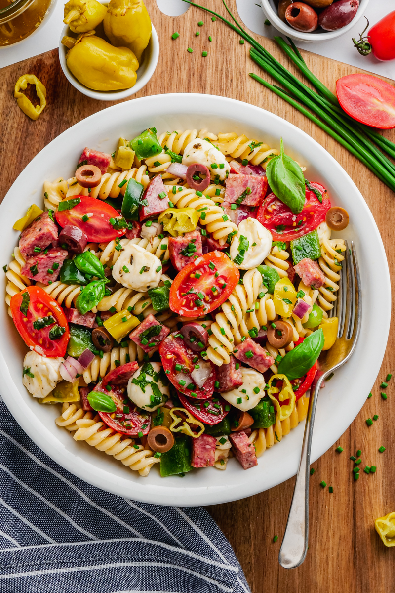

Homepage
Antipasto Pasta Salad Recipe

This antipasto pasta salad is a delicious combination of pasta, meat, and cheese with a homemade dressing. It serves a crowd and is great for a picnic.
Ingredients
- 1 pound seashell pasta
- 1/2 pound Asiago cheese, diced
- 1/4 pound Genoa salami, chopped
- 1/4 pound pepperoni sausage, chopped
- 3 medium tomatoes, chopped
- 1 medium red bell pepper, diced
- 1 medium green bell pepper, chopped
- 1 (6 ounce) can black olives, drained and chopped
- 1 (.7 ounce) package dry Italian-style salad dressing mix
Dressing
- 3/4 cup extra virgin olive oil
- 1/4 cup balsamic vinegar
- 2 tablespoons dried oregano
- 1 tablespoon dried parsley
- 1 tablespoon grated Parmesan cheese
- salt and ground black pepper to taste
Steps
- Make the salad: Bring a large pot of salted water to a boil. Add shell pasta and cook, stirring occasionally, until tender yet firm to the bite, about 9 minutes. Drain, run under cold water to cool pasta, and drain again.
- Transfer drained pasta to a large bowl. Add As iago, salami, pepperoni, tomatoes, bell peppers, and olives. Sprinkle dry dressing mix over top and stir until ingredients are thoroughly mixed. Cover and refrigerate for at least 1 hour.
- Make the dressing: Whisk oil, vinegar, oregano, parsley, Parmesan, salt, and pepper together in a small bowl. Cover and set aside until ready to serve.Make the dressing: Whisk oil, vinegar, oregano, parsley, Parmesan, salt, and pepper together in a small bowl. Cover and set aside until ready to serve.
- When ready to serve, pour dressing over chilled salad and mix until well combined.
You'll Also Love